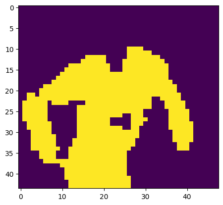

Football Match:
Computer Vision
Trained my own YOLO model for inference and used K-means for each player/referee to help classify them. Used camera perspective to track speeds and distance covered as well as possession of each team.

In my recent project, I trained a custom YOLO (You Only Look Once) model to perform real-time player and referee detection during sports games. Leveraging advanced object detection techniques, I implemented a system that not only identifies individuals on the field but also tracks their movements, calculates their speeds, and assesses possession throughout the game.
Key Features of the Project
Custom YOLO Model
I trained my own YOLO model to specifically detect players and referees, ensuring accurate and consistent identification. This required using a Kaggle set and using my GPU to train the model.
K-means for Classification
To enhance the YOLO model's inference, I applied K-means clustering to distinguish between individual players and referees. By clustering based on visual features and movements, I was able to improve classification accuracy and provide a better understanding of each participant's role during the game.

Tracking Movements
Using a combination of camera perspective correction and object tracking techniques, I was able to estimate the speed and distance covered by each player. The project involved integrating camera calibration to translate pixel movement into real-world distances, providing accurate performance metrics for each individual on the field.
Team Possession Analysis
By continuously monitoring the positions and movements of all detected players, I developed a possession-tracking system. The system calculates possession by determining which team controls the ball at any given time based on the proximity of players and ball trajectories.
Technical Details
YOLO (You Only Look Once)
A state-of-the-art object detection algorithm used for detecting players and referees in real-time during the game.
OpenCV
Used for video processing, camera perspective correction, and tracking the movement of individuals on the field.
K-means Clustering
Applied for classifying detected individuals (players and referees) based on their jersey colors.
Python
The primary programming language used to implement the YOLO model, K-means clustering, and tracking algorithms.
Darknet Framework
Utilized for training the custom YOLO model, providing a deep learning environment optimized for object detection.
Camera Calibration Techniques
Employed to correct for perspective distortions, allowing accurate measurements of speed and distance from pixel-based data.
NumPy & Pandas
Used for data manipulation, numerical computations, and tracking the positions and velocities of players throughout the game.
Matplotlib & Seaborn
Libraries used for visualizing player movements, distances covered, and possession statistics over time.
Jupyter Notebooks
Used for iterative model development, testing, and visualization of results in an interactive environment.
Results
This system has proven to be highly effective in analyzing player performance and team dynamics in real-time. Coaches and analysts can now use this data to assess player speeds, stamina, and overall team strategy. Moreover, the possession analysis provides valuable insights into ball control and game flow, offering a deeper understanding of the game’s dynamics. This project marks an important step in my journey into machine learning and computer vision for sports analytics, combining detection, classification, and tracking into a cohesive system.